Night shift keeps missing things at handover on the weld line, so build me a short slide deck they can walk through each night — cover the four handover points listed in the notes file in my documents folder, one slide each plus a title slide, and save it as a presentation in that same folder.
{
"config": [
{
"type": "execute",
"parameters": {
"command": "mkdir -p /home/user/documents && python3 -c \"open('/home/user/documents/handover_notes.txt','w').write('Weld Line 3 - Night Shift Handover Notes (compiled by Marisol Vega, Line Supervisor)\\n\\nFour things the outgoing shift must pass on every night:\\n\\n1. Open work orders\\n - WO-4471 (bracket assy, 340 of 600 done), WO-4488 (frame rail, not started)\\n - State the piece count reached and any parts still staged at the cell\\n\\n2. Machine and fixture status\\n - Robot cell R2 torch tip changed 21:40, cell R4 wire feeder intermittent\\n - Flag any fixture pulled for repair and where it went\\n\\n3. Quality holds and rework\\n - 12 rails on hold pending penetration check by QA (tag QH-119)\\n - Scrap tally for the shift and the defect code used\\n\\n4. Safety and housekeeping\\n - Spatter buildup at booth 2 extraction hood, clean before handoff\\n - Report near-misses and any missing PPE from the cabinet\\n')\"",
"shell": true
}
}
],
"evaluator": {
"func": "check_include_exclude",
"result": {
"type": "vm_command_line",
"command": "echo ostg-v16",
"shell": true
},
"expected": {
"type": "rule",
"rules": {
"include": [
"__judge_decides__"
]
}
}
}
}
step 1 22:35:57
THINKINGThe user wants a slide deck covering four handover points from a notes file in the Documents folder. First, I need to find and read that notes file to know what the four handover points are. Let me open the file manager or a terminal to locate it. A terminal will be more reliable for reading the file contents. Let me start by opening the terminal application.
ACTIONI'll start by opening a terminal to find and read the notes file in your Documents folder.
EXECUTED (pyautogui in VM)pyautogui.press("return")
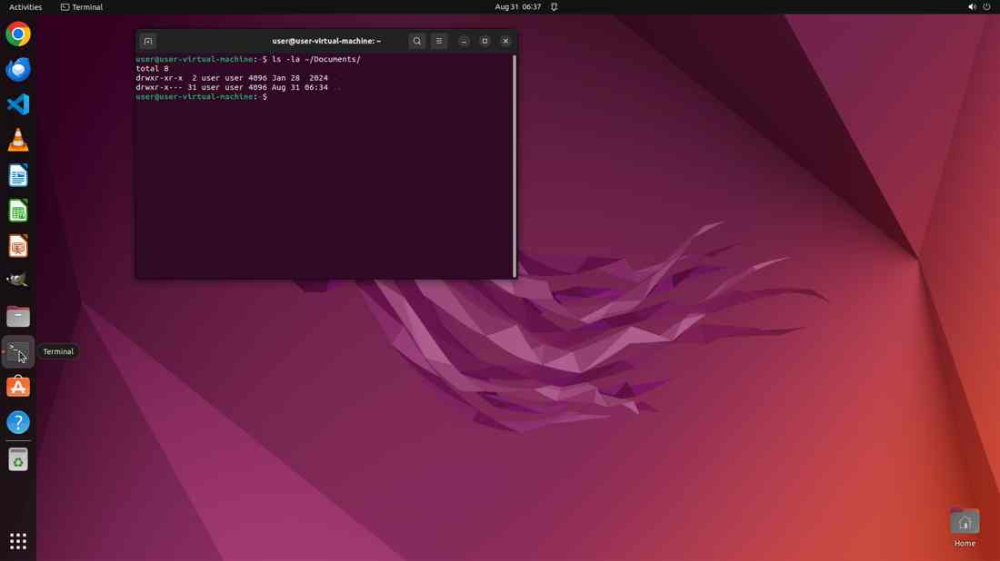
step 4 22:38:15
THINKINGThe Documents folder appears empty (only . and .. entries). The notes file might be elsewhere. Let me search the home directory for likely notes files. I'll search for files with common extensions and names containing "note", "handover", "weld", etc.
ACTIONThe Documents folder appears empty. Let me search the home directory for the notes file.
THINKINGThe command is typed but I need to press Enter. It seems the type action included the newline but the terminal shows it wrapped. Let me press Enter to execute.
EXECUTED (pyautogui in VM)pyautogui.press("return")
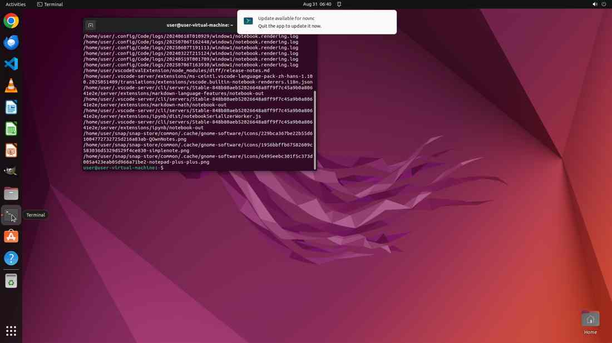
step 6 22:42:36
THINKINGThe search only returned system/config files, no relevant notes file in the user's home. The Documents folder was empty. The user said "notes file in my documents folder" — perhaps the file has a different name or extension. Let me list all files in the home directory and check other common folders (Desktop, Downloads) and search for document-type files more broadly. Let me dismiss the popup first and look for all user documents.
ACTIONThe search only found system files, not the notes. Let me look more broadly for document files in the user's home directory.
EXECUTED (pyautogui in VM)pyautogui.press("return")
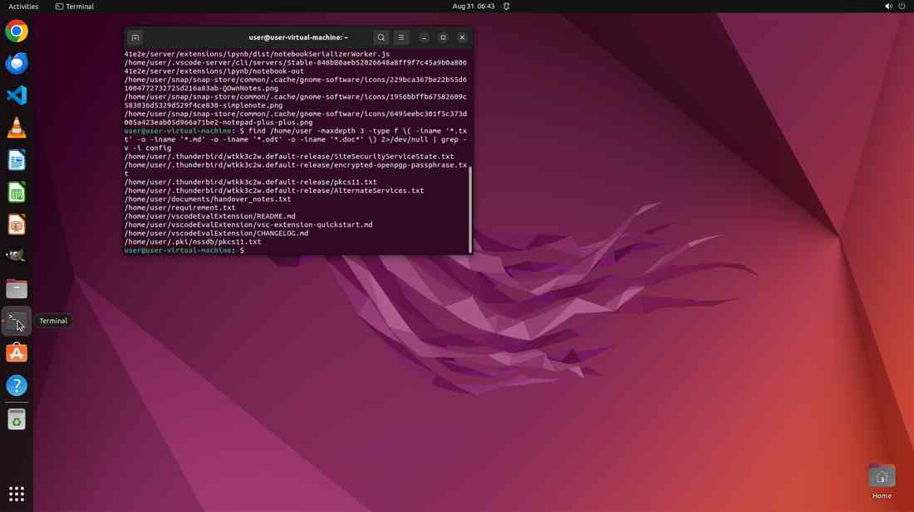
step 8 22:47:17
THINKINGI found `/home/user/documents/handover_notes.txt`. Note it's lowercase "documents", not "Documents". The user refers to "documents folder". Let me read the file content.
ACTIONI found `/home/user/documents/handover_notes.txt`. Let me read its contents.
EXECUTED (pyautogui in VM)pyautogui.typewrite("cat /home/user/documents/handover_notes.txt")
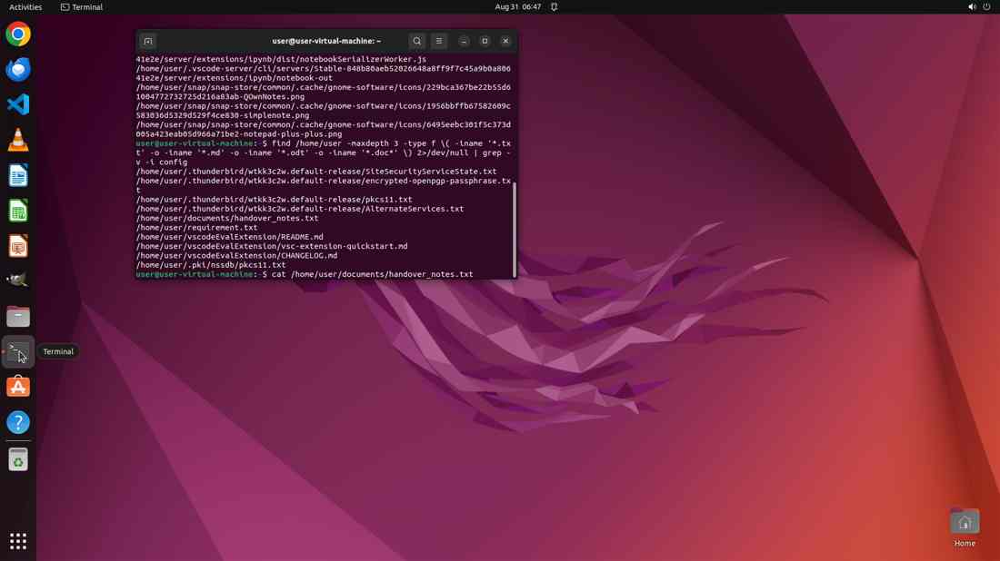
step 9 22:49:19
THINKINGThe command typed but not executed yet. Let me press Enter. But the terminal window is small; the output may scroll. Let me maximize the terminal first would be better, but I can just press Enter and read. Actually let me maximize to read the full content clearly. I'll press Enter first, then maximize.
EXECUTED (pyautogui in VM)pyautogui.press("return")
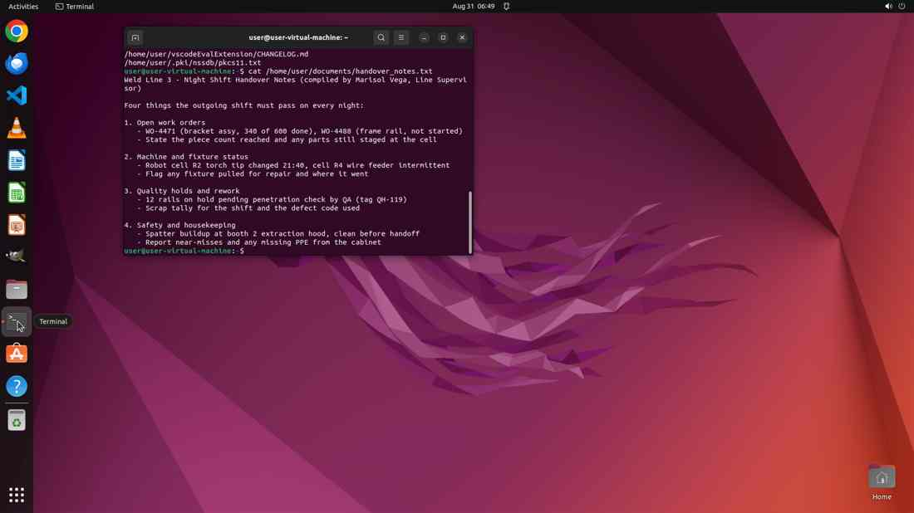
step 10 22:51:21
THINKINGNow I can read the full notes file. It says:
"Weld Line 3 - Night Shift Handover Notes (compiled by Marisol Vega, Line Supervisor)
Four things the outgoing shift must pass on every night:
1. Open work orders
- WO-4471 (bracket assy, 340 of 600 done), WO-4488 (frame rail, not started)
- State the piece count reached and any parts still staged at the cell
2. Machine and fixture status
- Robot cell R2 torch tip changed 21:40, cell R4 wire feeder intermittent
- Flag any fixture pulled for repair and where it went
3. Quality holds and rework
- 12 rails on hold pending penetration check by QA (tag QH-119)
- Scrap tally for the shift and the defect code used
4. Safety and housekeeping
- Spatter buildup at booth 2 extraction hood, clean before handoff
- Report near-misses and any missing PPE from the cabinet"
So the four handover points are:
1. Open work orders
2. Machine and fixture status
3. Quality holds and rework
4. Safety and housekeeping
Now I need to build a slide deck: title slide + 4 slides (one per point) = 5 slides, saved as a presentation in /home/user/documents/.
I'll use LibreOffice Impress (the orange icon in the dock). The best approach for reliability: I'll build it via the Impress GUI. But that's many steps. Alternatively I could use a script, but the guidance says use GUI directly. However, building a 5-slide deck in Impress GUI is doable.
Let me plan the content:
- Title slide: "Weld Line 3 — Night Shift Handover" / subtitle "Four Points to Pass On Every Night"
- Slide 1: Open work orders — bullets: state piece count reached & parts staged; e.g. WO-4471 bracket assy 340/600, WO-4488 frame rail not started
- Slide 2: Machine and fixture status — torch tip changes, wire feeder issues, flag fixtures pulled for repair
- Slide 3: Quality holds and rework — rails on hold for QA, scrap tally & defect code
- Slide 4: Safety and housekeeping — spatter cleanup, near-misses, missing PPE
The user wants "short slide deck they can walk through each night" covering the four handover points, one slide each plus title. So each point slide should contain the point title and the notes as bullets.
I'll open Impress. The orange icon at position (22, 315) is LibreOffice Impress. Let me click it. Actually the icon at 315 looks like Impress (orange). Let me open it.
I'll use the Outline view in Impress which is the fastest way to enter text for a text-based deck. In Impress, View > Outline lets me type titles and bullets quickly. That's efficient and reliable via GUI.
Let me open Impress.
ACTIONI now have the full notes. The four handover points are: (1) Open work orders, (2) Machine and fixture status, (3) Quality holds and rework, (4) Safety and housekeeping. Now I'll open LibreOffice Impress to build the deck.
THINKINGImpress is open with a blank presentation. I'll close the notification bars and use the Outline view for efficient text entry. Outline view: View menu > Outline. Let me close the two info bars first, then switch to Outline view.
Actually, the outline view is the most efficient way to enter all slide titles and bullets at once. Let me close the info bars first.
ACTIONImpress is open. Let me close the notification bars and switch to Outline view for efficient text entry.
EXECUTED (pyautogui in VM)pyautogui.click(174, 75)
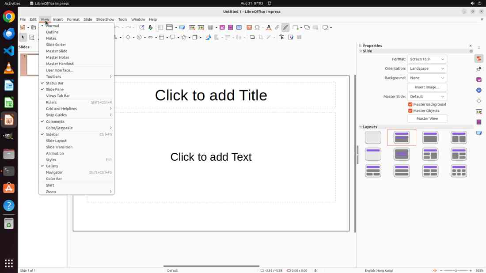
step 15 23:06:27
THINKINGThe View menu is open. I'll click "Outline". Then I'll type the whole outline. In outline view, typing a line creates a slide title at top level. Pressing Enter and Tab demotes to a bullet (level 2). Shift+Tab promotes back to a new slide title.
Plan:
- Line 1 (title): "Weld Line 3 - Night Shift Handover"
- Enter, then no Tab (keep title level) -> but I want a subtitle. Actually outline view top-level = slide title. For the title slide, I can add a subtitle bullet. But subtitle in outline is just a bullet on the title slide. Let me add a bullet: "Four points to pass on every night".
- Then Enter, Shift+Tab to go back to title level for slide 2 title: "Open work orders"
- Enter, Tab to demote to bullet: "State piece count reached and parts still staged at the cell"
- Enter (still bullet): "WO-4471 (bracket assy, 340 of 600 done), WO-4488 (frame rail, not started)"
- Enter, Shift+Tab -> new title: "Machine and fixture status"
- Enter, Tab: "Torch tip and wire feeder changes (e.g. R2 torch tip, R4 wire feeder)"
- Enter: "Flag any fixture pulled for repair and where it went"
- Enter, Shift+Tab: "Quality holds and rework"
- Enter, Tab: "Rails on hold pending QA penetration check (tag QH-119)"
- Enter: "Scrap tally for the shift and the defect code used"
- Enter, Shift+Tab: "Safety and housekeeping"
- Enter, Tab: "Spatter buildup at booth 2 extraction hood - clean before handoff"
- Enter: "Report near-misses and any missing PPE from the cabinet"
Important: In Impress outline, autocomplete/autocorrect might interfere. Also pressing Tab at the start of an empty first line demotes. Let me be careful. I'll type it as a sequence of key/type actions.
Let me first click Outline.
EXECUTED (pyautogui in VM)pyautogui.click(205, 125)
step 16 23:07:26
THINKINGI'm now in Outline view with the cursor on the first slide title line. I'll type the full outline. I'll type the title, then use Enter + Tab for bullets and Enter + Shift+Tab for new slide titles.
One concern: autocorrect capitalization and the way Impress handles Tab/Shift+Tab. It should work as standard. Let me type step by step, batching. I'll click into the outline area first to ensure focus.
Let me type the title first.
ACTIONI'm in Outline view. Now I'll type the full deck content, using Tab/Shift+Tab to control slide titles vs. bullets.
EXECUTED (pyautogui in VM)pyautogui.click(599, 188)
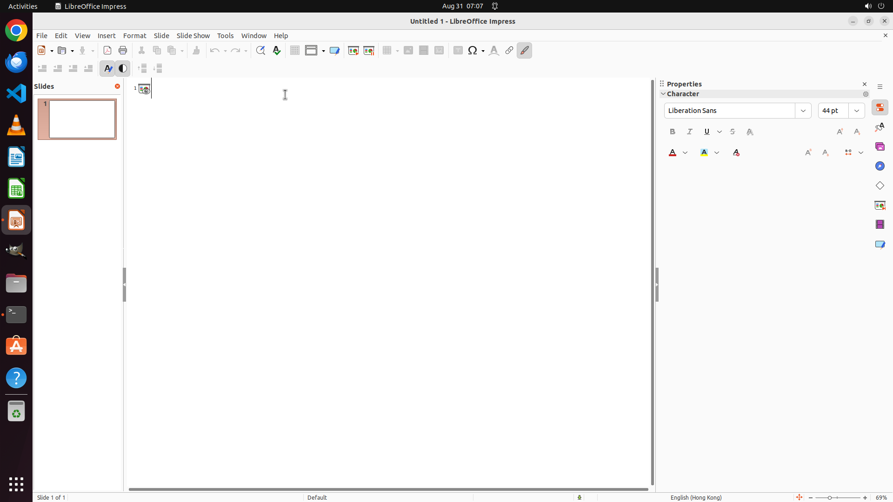
step 17 23:09:30
THINKINGCursor is in the outline. Now I'll type the whole thing. I'll type the title, Enter, Tab, subtitle bullet, Enter, Shift+Tab, then each slide title and its bullets.
Let me carefully construct the sequence. I'll batch type + key actions. Autocorrect might capitalize "wo-" to "WO-" which is fine. Also it may turn "4471" etc. fine. One risk: autocorrect changing straight quotes — I'm not using quotes. Another risk: Impress outline treating a leading "-" oddly — I'll avoid leading dashes and use regular text with a hyphen in the middle.
Let me build the sequence:
1. type "Weld Line 3 - Night Shift Handover"
2. key Return
3. key Tab
4. type "Four points to pass on every night"
5. key Return
6. key shift+Tab -> new slide title level
7. type "Open work orders"
8. key Return
9. key Tab
10. type "State the piece count reached and any parts still staged at the cell"
11. key Return
12. type "WO-4471 bracket assy (340 of 600 done); WO-4488 frame rail (not started)"
13. key Return
14. key shift+Tab
15. type "Machine and fixture status"
16. key Return
17. key Tab
18. type "Note torch tip and wire feeder changes (e.g. R2 torch tip, R4 wire feeder intermittent)"
19. key Return
20. type "Flag any fixture pulled for repair and where it went"
21. key Return
22. key shift+Tab
23. type "Quality holds and rework"
24. key Return
25. key Tab
26. type "Rails on hold pending QA penetration check (tag QH-119)"
27. key Return
28. type "Report scrap tally for the shift and the defect code used"
29. key Return
30. key shift+Tab
31. type "Safety and housekeeping"
32. key Return
33. key Tab
34. type "Spatter buildup at booth 2 extraction hood - clean before handoff"
35. key Return
36. type "Report near-misses and any missing PPE from the cabinet"
I'll batch these. This is a lot but predictable. Let me execute in one big batch.
ACTIONNow I'll type the entire outline in one batch.
TOOL CALL<tool_call>
<function=computer_use>
<parameter=action>
type
</parameter>
<parameter=text>
Weld Line 3 - Night Shift Handover
</parameter>
</function>
</tool_call>
EXECUTED (pyautogui in VM)pyautogui.typewrite("Weld Line 3 - Night Shift Handover")
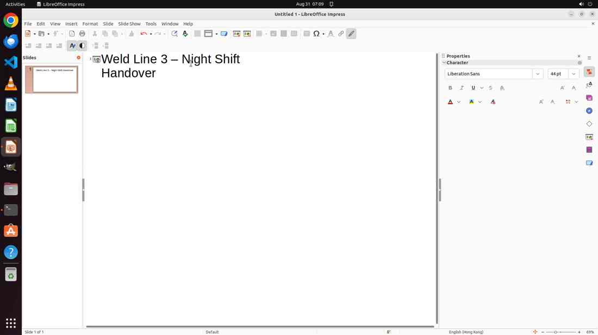
step 18 23:10:51
THINKINGTitle typed (note the hyphen became an en-dash "–" due to autocorrect, which is fine). Now I'll continue with the rest. I'll batch the remaining typing with key presses. The subtitle bullet needs Tab after Return.
Let me batch the entire remaining sequence.
ACTIONTitle is in. Now I'll add the subtitle and all four point slides with their bullets in one batch.
EXECUTED (pyautogui in VM)pyautogui.press("return")
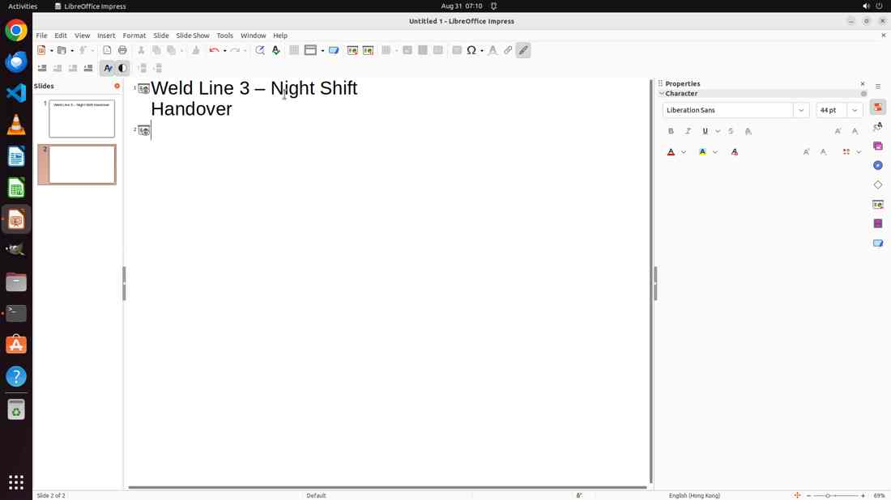
step 19 23:12:01
THINKINGGood — Return created slide 2 (a new title-level line). Now I'll Tab to demote to a bullet on slide 1, type the subtitle, then continue. I'll batch the remaining sequence now that I've confirmed the behavior works.
THINKINGTab demoted the line to a bullet on slide 1 (now back to Slide 1 of 1, font 32pt). The cursor is at the bullet level. Now I'll type the subtitle and continue with all four slides. Let me batch the entire remaining sequence since I've confirmed the mechanics.
ACTIONThe bullet level works. Now I'll type the subtitle and all four point slides in one batch.
TOOL CALL<tool_call>
<function=computer_use>
<parameter=action>
type
</parameter>
<parameter=text>
Four points to pass on every night
</parameter>
</function>
</tool_call>
EXECUTED (pyautogui in VM)pyautogui.typewrite("Four points to pass on every night")
step 21 23:13:38
THINKINGTitle slide done. Now I'll add slide 2 (Open work orders) and its bullets. I'll batch: Return, shift+Tab (promote to title), type title, Return, Tab, type bullet1, Return, type bullet2. Then continue to slide 3, 4. I'll do slide 2 first in this batch, then check.
ACTIONTitle slide complete. Now I'll add slide 2 (Open work orders) with its bullets.
EXECUTED (pyautogui in VM)pyautogui.press("return")
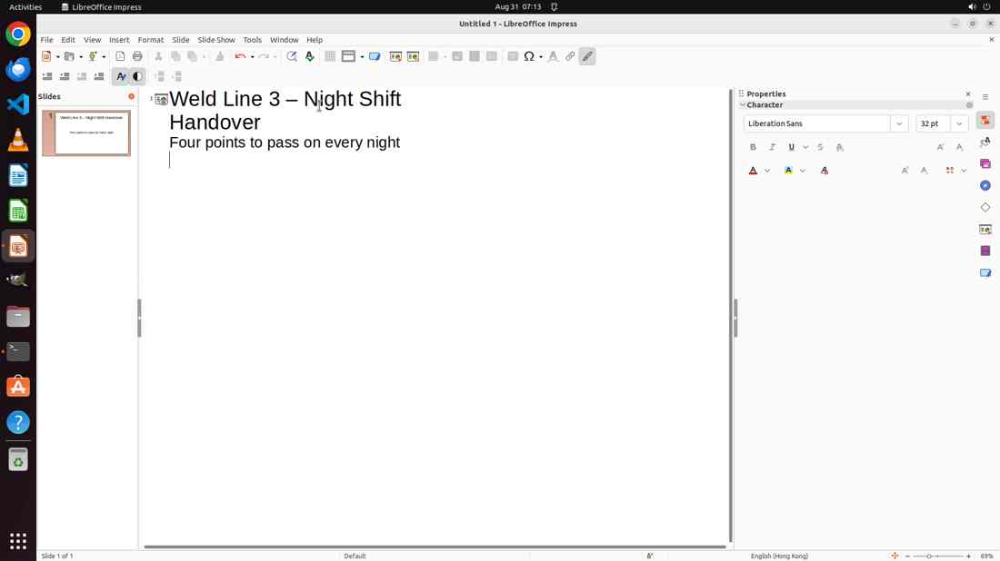
step 22 23:14:40
THINKINGNow there's a new bullet line (still at bullet level, 32pt). I need to promote it to title level with shift+Tab, then type the slide 2 title. Then Return, Tab, type bullets. Let me batch slide 2 fully.
EXECUTED (pyautogui in VM)pyautogui.hotkey("shift", "tab")
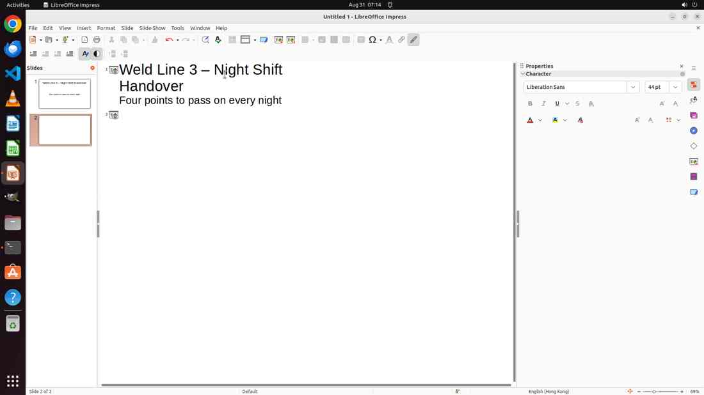
step 23 23:15:06
THINKINGNow on slide 2 title level (44pt). I've confirmed the mechanics fully work: type title, Return, Tab for bullets, Return to next bullet, Return + shift+Tab for next slide title. Now I can batch the entire rest of the deck in one call.
Remaining:
- type "Open work orders"
- Return, Tab
- type "State the piece count reached and any parts still staged at the cell"
- Return
- type "WO-4471 bracket assy (340 of 600 done); WO-4488 frame rail (not started)"
- Return, shift+Tab
- type "Machine and fixture status"
- Return, Tab
- type "Note torch tip and wire feeder changes (e.g. R2 torch tip changed, R4 wire feeder intermittent)"
- Return
- type "Flag any fixture pulled for repair and where it went"
- Return, shift+Tab
- type "Quality holds and rework"
- Return, Tab
- type "Rails on hold pending QA penetration check (tag QH-119)"
- Return
- type "Report scrap tally for the shift and the defect code used"
- Return, shift+Tab
- type "Safety and housekeeping"
- Return, Tab
- type "Spatter buildup at booth 2 extraction hood - clean before handoff"
- Return
- type "Report near-misses and any missing PPE from the cabinet"
I'll batch all of this.
ACTIONEverything works as expected. I'll now batch the entire remaining content — all four point slides with their bullets.
TOOL CALL<tool_call>
<function=computer_use>
<parameter=action>
type
</parameter>
<parameter=text>
Open work orders
</parameter>
</function>
</tool_call>
EXECUTED (pyautogui in VM)pyautogui.typewrite("Open work orders")
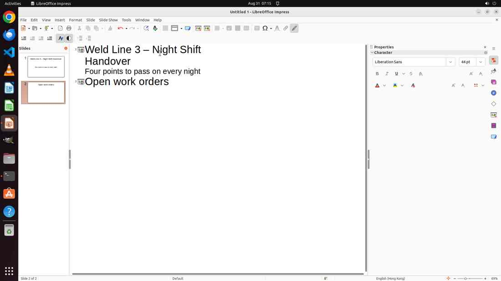
step 24 23:16:07
THINKINGSlide 2 title "Open work orders" is in. Now I'll add its two bullets and continue with the remaining three slides. I'll batch: Return, Tab, bullet1, Return, bullet2, then Return, shift+Tab, slide3 title, Return, Tab, bullets, etc. All in one batch.
ACTIONNow I'll add the bullets for slide 2 and the remaining three slides all in one batch.
EXECUTED (pyautogui in VM)pyautogui.press("return")
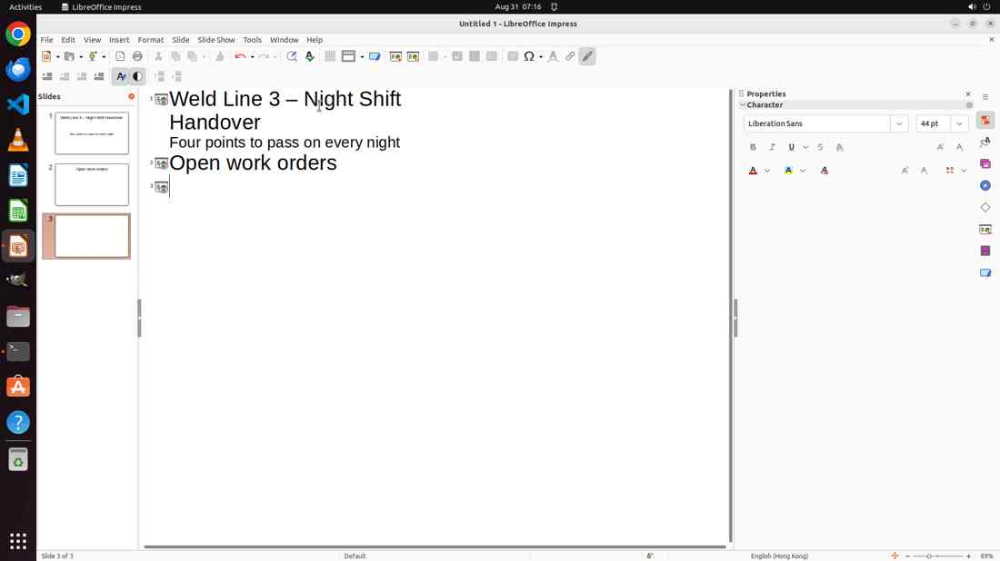
step 25 23:16:52
THINKINGReturn created slide 3 title. I need to Tab to demote it back to a bullet on slide 2, then type bullet 1. Let me Tab then type the two bullets, then continue with slides 3-4. I'll batch the whole rest now: Tab, bullet1, Return, bullet2, Return, shift+Tab, slide3 title, Return, Tab, b, Return, b, Return, shift+Tab, slide4 title, Return, Tab, b, Return, b.
I'll do this as separate type/key calls within one message for batching.
THINKINGNow on slide 2 at bullet level (32pt). Now I'll type the two bullets for slide 2, then continue. I'll batch the type and key actions together in a single tool call to be efficient. I'll type bullet1, then key Return, then type bullet2.
Actually I can't put key and type in one call — but I can issue multiple tool calls in the same block if independent. However they are dependent (sequential). But the instructions allow batching within a single tool call only for same-type actions. The `type` action types a string; it can't include Return. So I must alternate. To batch, I issue multiple computer calls in one block — but they're sequential/dependent. The system processes them in order. Since the outcome is predictable, I'll issue them as multiple calls in one block.
Let me issue: type bullet1, key Return, type bullet2, key Return, key shift+Tab, type slide3 title, key Return, key Tab, type b, key Return, type b, key Return, key shift+Tab, type slide4 title, key Return, key Tab, type b, key Return, type b.
That's a lot of calls. I'll put them all in one block since each is predictable.
ACTIONNow I'll type all remaining content — slide 2's bullets plus slides 3 and 4 with their bullets — as a sequence.
TOOL CALL<tool_call>
<function=computer_use>
<parameter=action>
type
</parameter>
<parameter=text>
State the piece count reached and any parts still staged at the cell
</parameter>
</function>
</tool_call>
EXECUTED (pyautogui in VM)pyautogui.typewrite("State the piece count reached and any parts still staged at the cell")
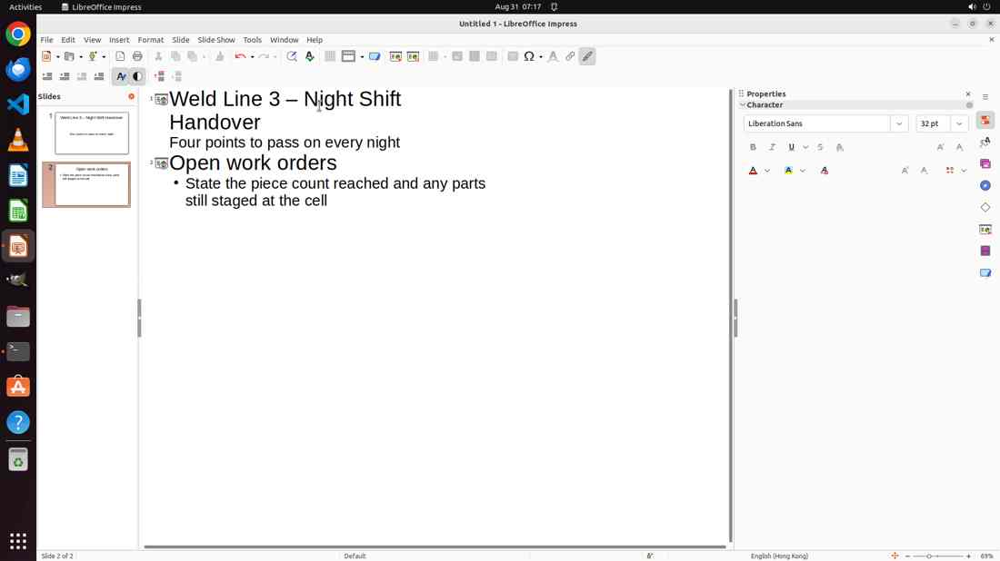
step 27 23:18:24
THINKINGGood, bullet 1 is on slide 2. Now I'll add bullet 2 and continue with slides 3 and 4. I'll issue the full sequence of calls in one block since each is predictable and sequential.
EXECUTED (pyautogui in VM)pyautogui.press("return")
step 28 23:19:20
THINKINGNew empty bullet on slide 2. Now I'll type bullet 2. Then I'll continue with slides 3 and 4. Since the mechanics are fully reliable now, I'll issue the entire remaining sequence as multiple calls in a single block: type bullet2, Return, shift+Tab, type slide3 title, Return, Tab, type bullet, Return, type bullet, Return, shift+Tab, type slide4 title, Return, Tab, type bullet, Return, type bullet.
ACTIONNow I'll complete the rest in one batch: slide 2's second bullet, then slides 3 and 4 with their bullets.
EXECUTED (pyautogui in VM)pyautogui.typewrite("WO-4471 bracket assy (340 of 600 done); WO-4488 frame rail (not started)")
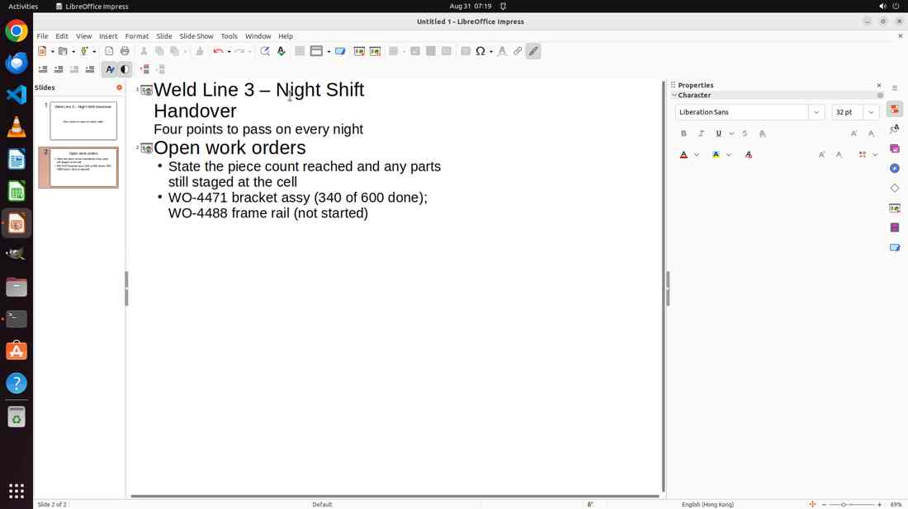
step 29 23:19:59
THINKINGSlide 2 complete. Now I'll create slide 3 (Machine and fixture status) and slide 4 (Quality holds and rework) and slide 5 (Safety and housekeeping). I'll issue the sequence as multiple calls in one block since it's predictable:
Return, shift+Tab, type "Machine and fixture status", Return, Tab, type bullet1, Return, type bullet2, Return, shift+Tab, type "Quality holds and rework", Return, Tab, type bullet1, Return, type bullet2, Return, shift+Tab, type "Safety and housekeeping", Return, Tab, type bullet1, Return, type bullet2.
ACTIONSlide 2 is complete. Now I'll add slides 3, 4, and 5 in one sequence.
EXECUTED (pyautogui in VM)pyautogui.press("return")
step 30 23:20:42
THINKINGThere's a new empty bullet on slide 2 (a third bullet). I need to promote it to a title for slide 3. I'll press shift+Tab, then type the slide 3 title, then Tab for bullets. Let me proceed with the full remaining sequence in one batch of calls.
EXECUTED (pyautogui in VM)pyautogui.hotkey("shift", "tab")
step 31 23:21:24
THINKINGNow on slide 3 title level (44pt). The slide 2 empty bullet was correctly removed/converted. Now I'll type the slide 3 title and its bullets, then slide 4 and 5. I'll issue the whole sequence in one block.
ACTIONNow I'll type slide 3, 4, and 5 completely in one sequence.
TOOL CALL<tool_call>
<function=computer_use>
<parameter=action>
type
</parameter>
<parameter=text>
Machine and fixture status
</parameter>
</function>
</tool_call>
EXECUTED (pyautogui in VM)pyautogui.typewrite("Machine and fixture status")
step 32 23:22:03
THINKINGSlide 3 title is set. Now I'll add its two bullets. I'll do: Return, Tab, type bullet1, Return, type bullet2. Then continue to slide 4 and 5. Let me batch by issuing multiple calls. I'll do slide 3 bullets now, then continue.
ACTIONNow the bullets for slide 3, then slides 4 and 5.
EXECUTED (pyautogui in VM)pyautogui.press("return")
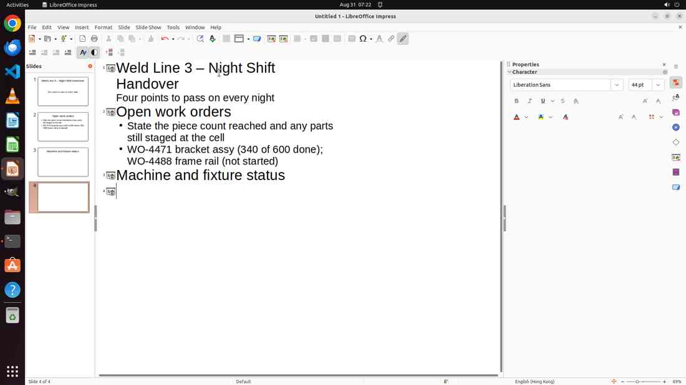
step 33 23:22:58
THINKINGReturn created slide 4 title level. I need to Tab to demote to bullet on slide 3, then type the two bullets. Let me Tab then type bullet1, Return, bullet2. Then I'll continue with slide 4 and 5 in the following batches. I'll do Tab now.
THINKINGNow on slide 3 bullet level (32pt). I'll type the two bullets for slide 3, then continue with slide 4 and 5. Since mechanics are proven, I'll now batch multiple calls in a single block: type bullet1, Return, type bullet2, Return, shift+Tab, type slide4 title, Return, Tab, type bullet1, Return, type bullet2, Return, shift+Tab, type slide5 title, Return, Tab, type bullet1, Return, type bullet2.
I'll issue all these calls together.
ACTIONNow I'll type the remaining content for slides 3, 4, and 5 all at once.
TOOL CALL<tool_call>
<function=computer_use>
<parameter=action>
type
</parameter>
<parameter=text>
Note torch tip and wire feeder changes (e.g. R2 torch tip changed, R4 wire feeder intermittent)
</parameter>
</function>
</tool_call>
EXECUTED (pyautogui in VM)pyautogui.typewrite("Note torch tip and wire feeder changes (e.g. R2 torch tip changed, R4 wire feeder intermittent)")
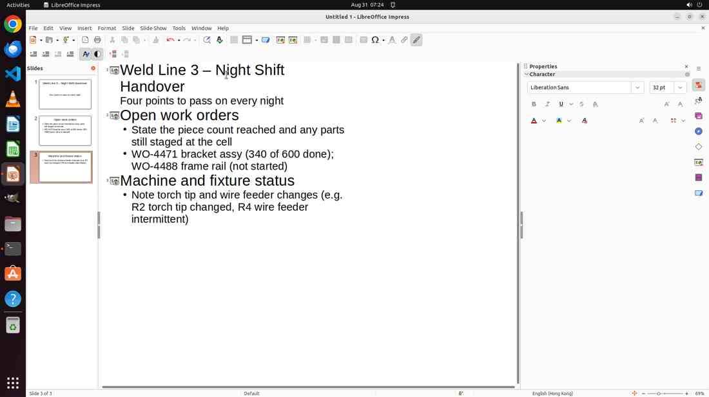
step 35 23:25:02
THINKINGNow I'll add the second bullet on slide 3, then create slides 4 and 5. I'll batch: Return, type "Flag any fixture pulled for repair and where it went", Return, shift+Tab, type "Quality holds and rework", Return, Tab, type "Rails on hold pending QA penetration check (tag QH-119)", Return, type "Report scrap tally for the shift and the defect code used", Return, shift+Tab, type "Safety and housekeeping", Return, Tab, type "Spatter buildup at booth 2 extraction hood - clean before handoff", Return, type "Report near-misses and any missing PPE from the cabinet".
I'll issue these calls in one block since they're predictable and sequential.
EXECUTED (pyautogui in VM)pyautogui.press("return")
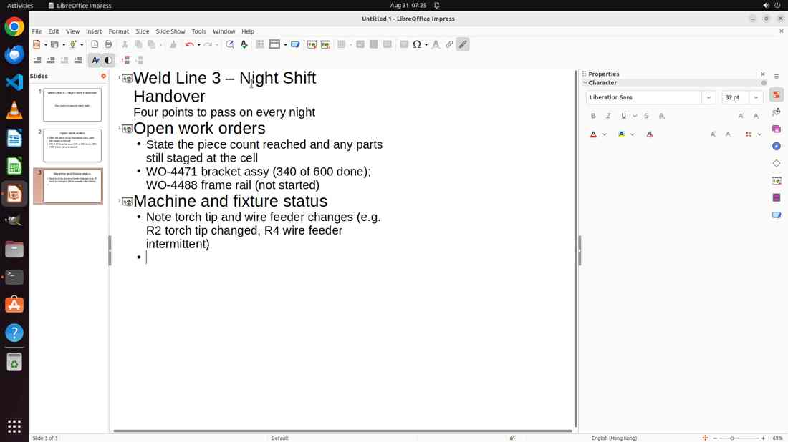
step 36 23:25:45
THINKINGNew empty bullet on slide 3. Now I'll type the second bullet on slide 3, then continue with slides 4 and 5. I'll batch these calls together since they're all predictable and sequential.
TOOL CALL<tool_call>
<function=computer_use>
<parameter=action>
type
</parameter>
<parameter=text>
Flag any fixture pulled for repair and where it went
</parameter>
</function>
</tool_call>
EXECUTED (pyautogui in VM)pyautogui.typewrite("Flag any fixture pulled for repair and where it went")
step 37 23:27:06
THINKINGSlide 3 is complete with two bullets. Now I'll create slide 4 (Quality holds and rework) and slide 5 (Safety and housekeeping). I'll do: Return (creates slide 4 title), shift+Tab, type slide4 title, Return, Tab, type bullet1, Return, type bullet2, Return, shift+Tab, type slide5 title, Return, Tab, type bullet1, Return, type bullet2.
I'll batch these as multiple calls in one block.
ACTIONSlide 3 done. Now I'll create slide 4 and slide 5 in one sequence.
EXECUTED (pyautogui in VM)pyautogui.press("return")
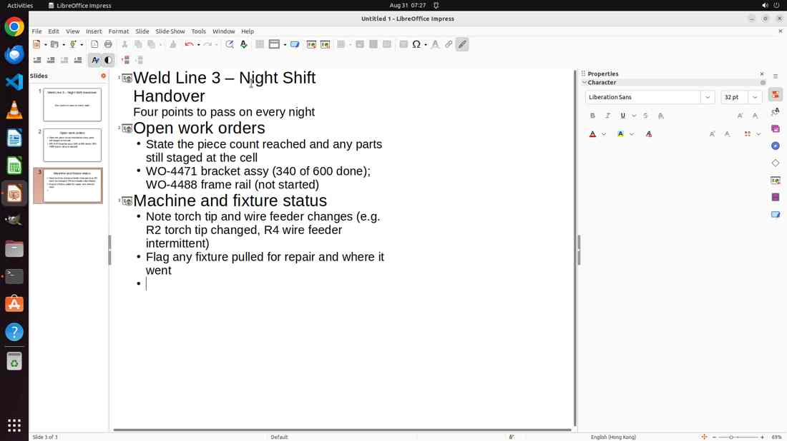
step 38 23:27:27
THINKINGWait — the Return here created a NEW bullet (still 32pt, on slide 3) rather than a new slide title. So now there's a third empty bullet on slide 3. I need to press shift+Tab to promote it to slide 4 title. Good, that matches my plan: shift+Tab now.
EXECUTED (pyautogui in VM)pyautogui.hotkey("shift", "tab")
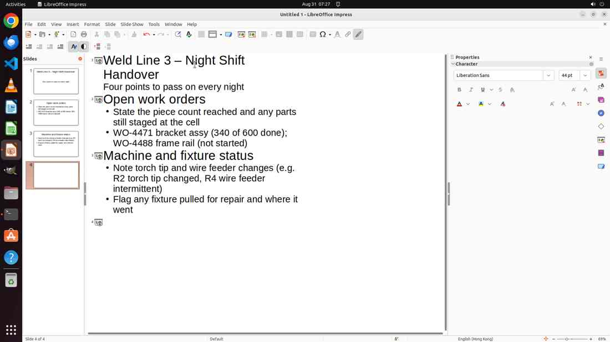
step 39 23:28:26
THINKINGNow on slide 4 title level (44pt). Now I'll type slide 4 title and its bullets, then slide 5. I'll batch the calls. Type slide 4 title, Return, Tab, type bullet1, Return, type bullet2, Return, shift+Tab, type slide 5 title, Return, Tab, type bullet1, Return, type bullet2.
I'll issue these in sequence. Since I've verified each works, I'll do them one batch at a time to be safe but combine the type and keys in separate calls within a single block.
ACTIONNow I'll type slide 4's title and bullets, then slide 5, in one batch.
TOOL CALL<tool_call>
<function=computer_use>
<parameter=action>
type
</parameter>
<parameter=text>
Quality holds and rework
</parameter>
</function>
</tool_call>
EXECUTED (pyautogui in VM)pyautogui.typewrite("Quality holds and rework")
step 40 23:29:21
THINKINGSlide 4 title set. Now I'll add its two bullets. Return, Tab, type bullet1, Return, type bullet2. Then continue to slide 5. I'll do Return, Tab first.
THINKINGNow on slide 4 bullet level (32pt). I'll type the two bullets for slide 4, then continue to slide 5. Type bullet1, Return, type bullet2, then Return, shift+Tab, type slide5 title, Return, Tab, type bullet1, Return, type bullet2. I'll issue these in one batch.
ACTIONNow I'll complete slide 4's bullets and create slide 5 in one batch.
TOOL CALL<tool_call>
<function=computer_use>
<parameter=action>
type
</parameter>
<parameter=text>
Rails on hold pending QA penetration check (tag QH-119)
</parameter>
</function>
</tool_call>
EXECUTED (pyautogui in VM)pyautogui.typewrite("Rails on hold pending QA penetration check (tag QH-119)")
step 43 23:32:05
THINKINGSlide 4 first bullet is in. Now I'll add the second bullet on slide 4, then create slide 5. Return, type bullet2, Return, shift+Tab, type slide5 title, Return, Tab, type bullet1, Return, type bullet2.
EXECUTED (pyautogui in VM)pyautogui.press("return")
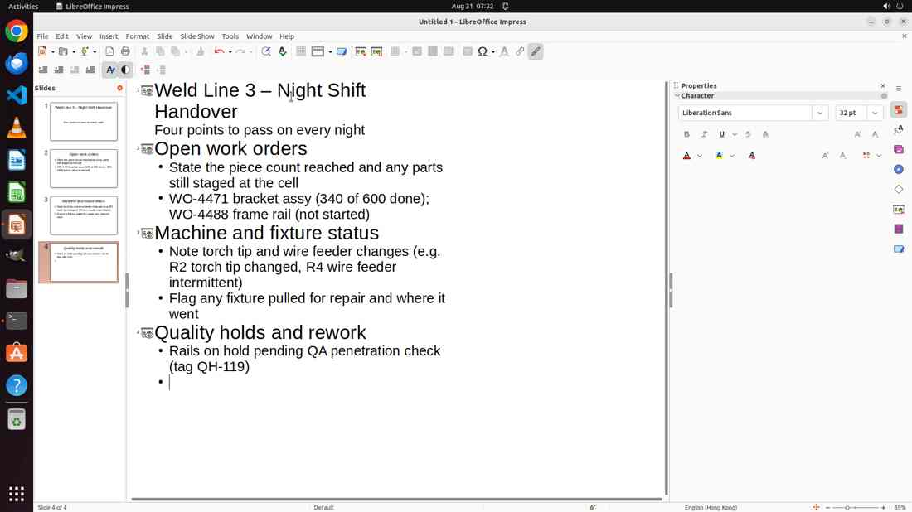
step 44 23:32:57
THINKINGNew empty bullet on slide 4. Now I'll type bullet 2 for slide 4, then create slide 5. Type bullet2, Return, shift+Tab, type slide5 title, Return, Tab, type bullet1, Return, type bullet2. I'll do this in a batch of calls.
TOOL CALL<tool_call>
<function=computer_use>
<parameter=action>
type
</parameter>
<parameter=text>
Report scrap tally for the shift and the defect code used
</parameter>
</function>
</tool_call>
EXECUTED (pyautogui in VM)pyautogui.typewrite("Report scrap tally for the shift and the defect code used")
step 45 23:34:11
THINKINGSlide 4 complete. Now the final slide 5 (Safety and housekeeping). I'll press Return (creates slide 5 title level), then type the title, Return, Tab, type bullet1, Return, type bullet2. Let me do Return then shift+Tab... wait, Return at end of a bullet creates a new bullet on slide 4, then I need shift+Tab to make it slide 5 title. Let me do Return, shift+Tab, then type.
ACTIONSlide 4 is complete. Now the final slide 5 (Safety and housekeeping).